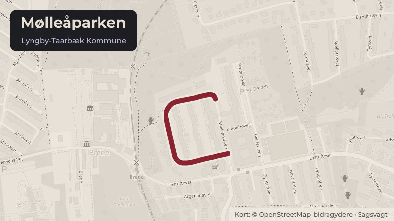

Besluttet 1. oktober, Økonomiudvalget, Lyngby-Taarbæk
Mølleåparken 60 - Bebyggelsesregulerende bestemmelser
Kommunalbestyrelsen besluttede på mødet den 21. maj at udstykke Mølleåparken 60 i to ejendomme med henblik på salg til åben-lav boligbebyggelse. Med denne sag orienteres der om de konsekvenser, som kommunalbestyrelsens beslutning af 21. maj medfører for aflysningen af byplanvedtægt 1.
Steder i sagen: Mølleåparken

Kort fortalt
- Hvem
- Økonomiudvalget, Lyngby-Taarbæk Kommune
- Hvornår
- Torsdag 1. oktober 2026
- Status
- Besluttet. Byplanudvalget orienteres om indstillingspunkt 1 Økonomiudvalget orienteres om indstillingspunkt 1 Byplanudvalget anbefaler indstillingspunkt 2 Økonomiudvalget beslutter indstillingspunkt 2 BESLUTNINGSFORLØB Beslutning fra Byplanudvalget 2026-2029, den 23. september 2026, punkt 8: Ad 1) Orientering givet. Ad 2) Anbefalet.
- Næste skridt
- Forvaltningen vil, jf. § 33 stk. 1 nr. 2 i planloven sende beslutning om aflysning af byplanvedtægt 1 for Mølleåparken 60 i offentlig høring i 8 uger.
Hvad kan du gøre?
- Hold øje med høringen
- Forslaget lægger op til en offentlig høring. Når den åbner, kan alle sende et høringssvar på ltk.dk.
Læs hele sagen Kommunens egen tekst
Indstilling
Forvaltningen foreslår, at
1. der orienteres om konsekvenserne vedrørende aflysning af Byplanvedtægt 1,
2. den bebyggelsesregulerende servitut om bebyggelse og arkitektur godkendes.
Problemstilling
Kommunalbestyrelsen besluttede på mødet den 21. maj 2026 (sag 19) at udstykke
ejendommen Mølleåparken 60 i to selvstændige ejendomme med henblik på salg til åben-lav
boligbebyggelse.
Ejendommen er omfattet af Byplanvedtægt nr. 1, Tillæg nr. 3, pkt. 2, der fastlægger, at arealet
må anvendes til institutionsformål/missionshus.
I sagen behandlet den 21. maj 2026 anbefalede forvaltningen, at det ene delareal blev anvendt
til parkering for Brede Torv, mens det andet delareal blev anvendt til åben-lav boligbebyggelse.
Da parkering er i overensstemmelse med byplanvedtægten, anbefalede forvaltningen alene at
aflyse byplanvedtægten for det delareal, der skulle anvendes til boligformål. Som følge af
Kommunalbestyrelsens beslutning om at udbyde begge de nye ejendomme til boligformål skal
Byplanvedtægt nr. 1 aflyses for begge delarealer.
Ved aflysning af byplanvedtægten vil ejendommene alene være omfattet af kommuneplanens
rammeområde 5.2.01 Brede Torv. Rammeområdet er udlagt til centerformål og giver mulighed
for butikker, publikumsorienterede serviceerhverv, åben-lav boligbebyggelse samt offentlige
formål. Kommuneplanrammen fastlægger desuden, at ny boligbebyggelse på Mølleåparken 60
skal opføres som åben-lav boligbebyggelse med fladt tag og en maksimal bygningshøjde på
6,5 meter. Endvidere skal byggeri og faste hegn placeres mindst 5 meter fra vejskel for at sikre
vejens åbne karakter og mulighed for etablering af beplantning langs vejen.
De øvrige ejendomme i Mølleåparken er omfattet af Byplanvedtægt nr. 1 og en tinglyst
deklaration fra 1975, der regulerer områdets arkitektur. Parcelhusene i Mølleåparken er
registreret med en bevaringsværdi på 4 og er derfor ikke udpeget som bevaringsværdige.
Området har imidlertid en tydelig arkitektonisk sammenhæng og et ensartet
bebyggelsesudtryk, som er sikret gennem deklarationen fra 1975. Forvaltningen vurderer
derfor, at der fortsat er et planlægningsmæssigt hensyn til at sikre, at nyt byggeri tilpasses
områdets karakter.
Der skal med denne sag tages stilling til, om der skal tinglyses en bebyggelsesregulerende
servitut på de to nye ejendomme, som sikrer, at nyt byggeri tilpasses den eksisterende
bebyggelse og områdets arkitektoniske karakter.
Alternativt kan der udarbejdes og vedtages en lokalplan for de nye ejendomme på
Mølleåparken 60, der regulerer bebyggelsens omfang, udformning og arkitektoniske udtryk.
Løsninger
Bebyggelsesregulerende servitut om arkitektur
Forvaltningen har udarbejdet et forslag til en bebyggelsesregulerende servitut for Mølleåparken
60 (bilag 1). Servitutten indeholder bestemmelser om bebyggelsens placering, højde,
bygningernes arkitektoniske udtryk samt hegning og indretning af ubebyggede arealer.
Forslaget tager udgangspunkt i den eksisterende deklaration fra 1975 (bilag 2), som regulerer
de omkringliggende ejendommes udformning og placering i forhold til vej. Formålet er at sikre,
at ny bebyggelse på Mølleåparken 60 tilpasses områdets eksisterende karakter og indgår som
en del af en samlet og harmonisk bebyggelse. Servitutten er udarbejdet i overensstemmelse
med kommuneplanens rammer for området.
Ved udarbejdelsen af servitutforslaget har forvaltningen særligt lagt vægt på at videreføre de
bestemmelser, der understøtter områdets karakter. Det gælder blandt andet krav om
tilbagetrækning fra vejskel og åbne, grønne forhaver, som er et væsentligt kendetegn for
Mølleåparken. Desuden videreføres bestemmelsen om bebyggelse i én etage. Terrænet på
Mølleåparken 60 er relativt fladt sammenlignet med de omkringliggende ejendomme mod vest,
derfor vurderer forvaltningen, at der ikke er terrænmæssigt grundlag for etablering af
underetage. Muligheden for underetage indgår derfor ikke i servitutforslaget.
For at imødekomme nutidige byggeskikke og materialevalg foreslår forvaltningen, at facader
fortsat kan udføres i kalksandsten, men at der samtidig gives mulighed for anvendelse af hvide
eller lysegrå tegl. Krav om vinduer og døre i sort træ videreføres for at sikre et ensartet
arkitektonisk udtryk i området. Sternbånd skal udføres i aluminium. Forvaltningen foreslår, at
der ikke fastsættes krav til sternbåndets højde, da nutidige krav til tagkonstruktioner og
isolering kan medføre variationer i dimensioneringen. En regulering af materiale vurderes
derfor at være tilstrækkelig til at sikre et ensartet arkitektonisk udtryk.
Hegn fastlægges som levende hegn. Af hensyn til at begrænse eventuelle støjgener fra
varelevering til Brede Torv gives der dog mulighed for etablering af fast hegn mellem
varegården og Mølleåparken 60. Fast hegn og bebyggelsens arkitektoniske udformning skal
godkendes af Lyngby-Taarbæk Kommune.
Forvaltningen anbefaler, at servitutten tinglyses på ejendommen Mølleåparken 60, inden
udstykningen gennemføres.
Som alternativ kan der udarbejdes en ny lokalplan for Mølleåparken 60. En lokalplanproces vil
imidlertid være mere tidskrævende og forventes at forsinke salget af ejendommen.
Forvaltningen vurderer, at en bebyggelsesregulerende servitut er det mest hensigtsmæssige
redskab til at sikre områdets arkitektoniske karakter, samtidig med at ejendommene kan
udstykkes og sælges uden den tidsmæssige forsinkelse, som en lokalplanproces vil medføre.
Forvaltningen er i dialog med grundejerforeningen Mølleåparken 16-52 og vil i forbindelse med
salget sikre, at de nye ejendomme optages som medlemmer af grundejerforeningen.
Strategisk ramme
Lyngby-Taarbæk Kommunes arkitekturpolitik.
Kommunens budget i forhold til indtægt for salg af ejendom.
Økonomi
Sagen har som udgangspunkt ingen bevillingsmæssige konsekvenser. Et salg af Mølleåparken
60 forudsætter, at byplanvedtægt 1 aflyses så ejendommen kan anvendes til boligformål.
Videre proces
Forvaltningen vil, jf. § 33 stk. 1 nr. 2 i planloven sende beslutning om aflysning af
byplanvedtægt 1 for Mølleåparken 60 i offentlig høring i 8 uger.
Såfremt økonomiudvalget godkender den bebyggelsesregulerende servitut om arkitektur, vil
forvaltningens salgsenhed tinglyse servitutten på Mølleåparken 60. Herefter vil forvaltningens
salgsenhed påbegynde arbejdet med udstykning af ejendommen i to matrikler. Forvaltningen
vil herefter forberede udbud af Mølleåparken 60, som skal udbydes samtidig via ekstern
ejendomsmægler. Forvaltningen vil herefter vende retur med beslutningssag til
Økonomiudvalget om salg af Mølleåparken 60.
Beslutning
Byplanudvalget orienteres om indstillingspunkt 1
Økonomiudvalget orienteres om indstillingspunkt 1
Byplanudvalget anbefaler indstillingspunkt 2
Økonomiudvalget beslutter indstillingspunkt 2
BESLUTNINGSFORLØB
Beslutning fra Byplanudvalget 2026-2029, den 23. september 2026, punkt 8:
Ad 1) Orientering givet.
Ad 2) Anbefalet.
Kilde: Lyngby-Taarbæk Kommune, Økonomiudvalget, referat fra mødet torsdag 1. oktober 2026, punkt 8. Læs den originale sag hos kommunen.